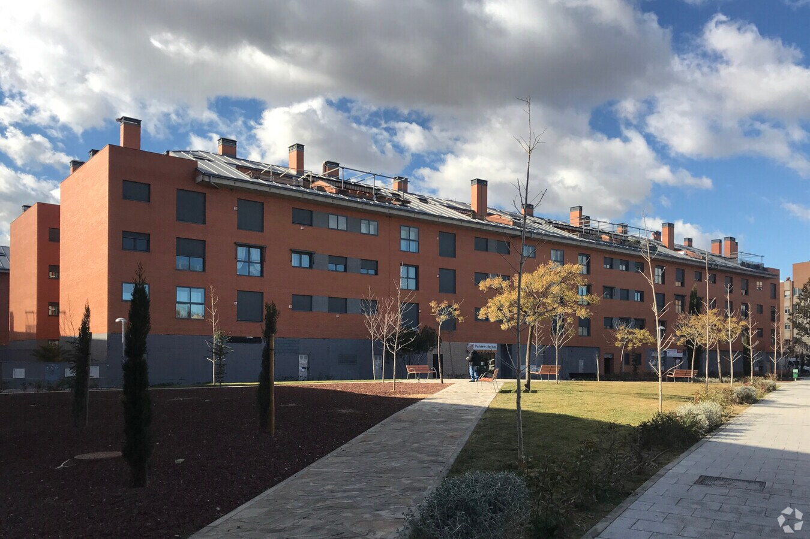
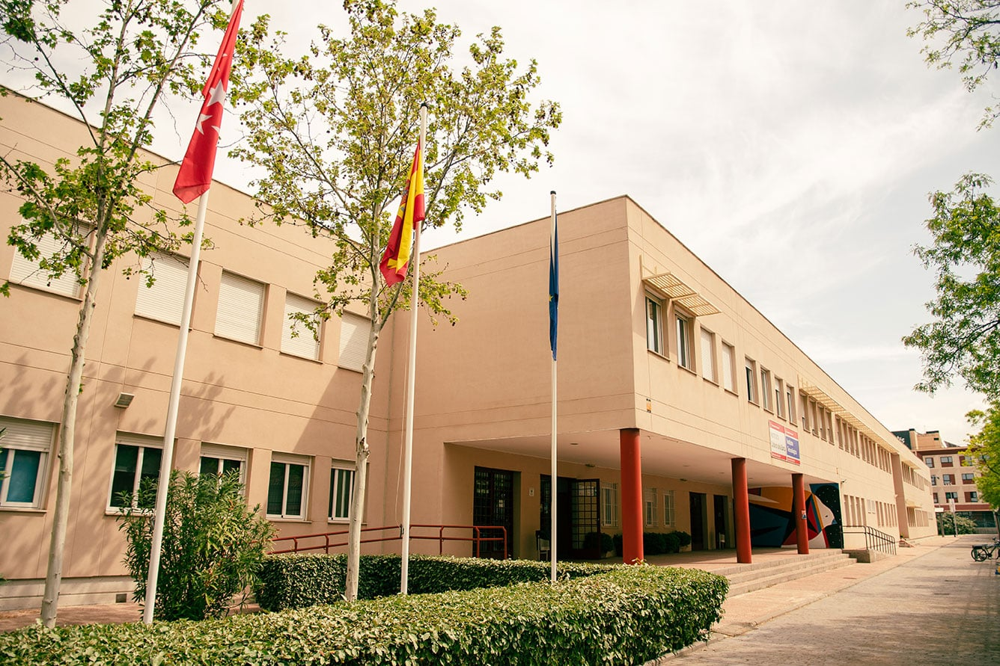

Guía turística
Descubre Pinto, de tu barrio al mundo
Esta guía te propone un recorrido en cuatro paradas, de lo más cercano a lo más amplio: el barrio donde se vive el día a día, el pueblo que lo rodea, el país al que pertenece y el instituto donde se aprende a conocerlos mejor. Cada parada tiene su propia página con información, datos y curiosidades.
¿Qué hay en cada página?
Nicolás Fúster
situado en la zona oeste de Pinto junto al barrio de La Cristina, es una tranquila área residencial articulada alrededor del extenso Parque Municipal Nicolás Fúster.
Ver más
Pinto
es un municipio y localidad española perteneciente a la Comunidad de Madrid, situado a unos 20 km al sur de la capital.
Ver más
España
España es un país soberano transcontinental ubicado en el suroeste de Europa, miembro de la Unión Europea y cuya capital es Madrid
Ver más
IES Calderón de la Barca
Es uno de los Institutos de Innovación Tecnológica (IIT) de la Comunidad de Madrid, con fuerte integración de herramientas TIC y participación en proyectos internacionales como Erasmus+.
Ver másTu recorrido
Una ruta en 4 paradas
De lo más cercano a lo más lejano. Elige una parada y descubre de qué trata.